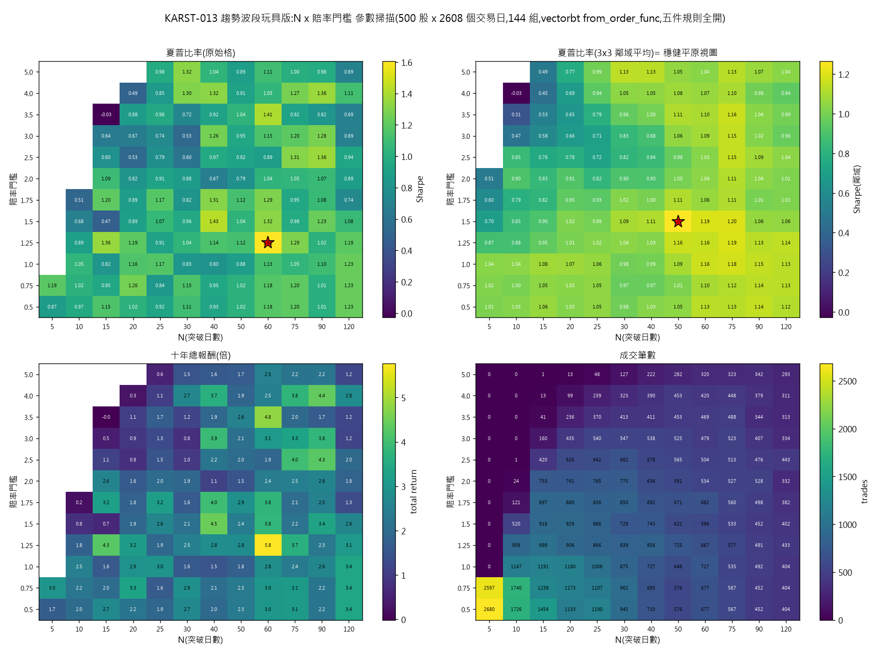

from_signals 由頭到尾看不見組合權益,表達不到。同一原因令「單筆風險 2% 當下權益」
也只能降格成「2% 起始本金」。改用 from_order_func 之後五件全部照原意表達,一次過跑完,
單次回測 0.656 秒——引擎選 vectorbt(D-011)不需要翻案,要上調的是適配層的工作量估算:
自訂訂單函式要自己手寫止蝕與目標,換走了引擎內建那一格。
照 D-016 的趨勢波段骨幹設一個玩具版,只用價格數據。數據直接沿用 KARST-009 那份合成面板 (500 隻股票 × 2,608 個交易日,2016-01-04 至 2025-12-31,固定種子 20260825), 環境亦沿用同一個 venv,沒有另起爐灶——所以本次的耗時數字與 KARST-009 那張表可以直接並排看。
| 項目 | 內容 |
|---|---|
| 引擎 | vectorbt 1.1.0 / Python 3.11.15 / numpy 2.4.6 / pandas 3.0.5 / numba 0.67.0 |
| 環境 | experiments/2026-08-bakeoff/.venv-vbt(與 KARST-009 同一個) |
| 數據 | experiments/2026-08-bakeoff/data/panel.parquet,重生指令 python gen_data.py |
| 執行慣例 | 訊號在 t 日收市成形,t+1 日收市成交(無同日前視),與 KARST-009 一致 |
| 本金與風控 | 起始 100 萬,單筆風險 2%,單一持倉市值上限 20%,月度熔斷門檻 −6% |
| 費用 | 費用與滑點設為零(與 KARST-009 同一取態,求兩條路線可比) |
這是本票的正題。下表的「扭曲」一欄,指的是用現成的 from_signals 表達時有沒有走樣。
| 規則 | vectorbt 入口 | 扭曲? | 說明與替代寫法 |
|---|---|---|---|
| 1. 入場 突破 N 日新高 |
from_signals(entries=)布林矩陣 |
無 | 訊號層在 numpy 算好一張 (日期 × 股票) 布林矩陣交給引擎,引擎原生食。 |
| 2. 止蝕 前波段低位 |
from_signals(sl_stop=)逐格百分比陣列 |
無 | 引擎只收百分比,不收絕對價位——但把分母定為「真正成交價」(t+1 日收市)之後,
換算回去的絕對止蝕價剛好等於前波段低位本身,沒有因為換算而走樣。
sl_stop 只在入場那一根鎖定,所以逐格填值不會互相污染。同理 tp_stop 表達目標價。 |
| 3. 賠率門檻 風險回報比過濾 |
訊號層自行過濾 (引擎沒參與) |
無 | 賠率完全由訊號日已知的價位算得出(目標距離 ÷ 止蝕距離),入場前先在 numpy 篩走, 根本不需要引擎知道這回事。這件事引擎承不承載是個假問題。 |
| 4. 注碼 按止蝕距離反推 單筆風險 2% |
size= 股數陣列size_type='amount' |
部分 | 算式原生,基數走樣。「股數 = 風險額 ÷ 止蝕距離」引擎照單全收;
但「風險額 = 2% × 當下權益」做不到——SignalContext 只有
(i, col, position_now, val_price_now, flex_2d),沒有現金也沒有權益,
自訂訊號函式 signal_func_nb 看不見組合值。只能退而求其次用起始本金做基數。
代價見第四節:同一條策略,十年總報酬由 2.23 倍變成 2.88 倍,成交筆數由 1,038 變成 1,944。
替代寫法:from_order_func,OrderContext.value_now 就是當下權益。 |
| 5. 月度熔斷 組合層虧損斷路 |
from_order_func 的pre_segment_func_nb |
表達不到 | 這一件是 A-005 真正塌下來的地方。熔斷要看組合權益走勢,而 from_signals
全程沒有一個回呼看得見現金或權益,無論怎樣寫都表達不到。
兩條替代路都試過,見第三節。 |
from_signals 一定做不到熔斷不是寫法問題,是介面問題。引擎給訊號回呼的上下文只有五格,現金、權益、持倉市值一格都沒有;
而給訂單回呼(from_order_func)的上下文有 last_cash、last_value、
value_now。一個組合層的規則,只可能寫在看得見組合的那一層。
這一句就是 A-005 判假的全部理由。
做法:先跑一次 → 讀組合權益曲線 → 找出每個月首次觸及 −6% 的那一根 → 把該根之後、同月之內的 入場訊號抹走 → 再跑。抹走入場會改變權益曲線本身,所以要迭代到遮罩不再變——這是一個不動點搜索。
本次 6 次迭代後收斂,共 0.944 秒(單次是 0.14 秒,即 6.7 倍)。但看中間過程就知道它不牢靠: 十年總報酬在迭代之間來回擺 2.88 → 3.82 → 3.13 → 3.35 → 2.82 → 2.82。 收斂是這一組參數的運氣,不是保證——沒有任何機制擔保它一定收斂,而一個掃描要跑幾百組。
from_order_func 自寫訂單函式五件規則全部照原意表達,一次過跑完,不需要迭代。真正的代價不在速度,在換走了引擎內建的止蝕與目標:
from_order_func 沒有 sl_stop / tp_stop,止蝕、目標、
連跳空穿價時以開市價成交的擺位,全部要自己逐根 bar 手寫。本次整個訂單函式 44 行,
其中純粹為了補回引擎內建那一格而寫的離場邏輯佔 17 行——熔斷本身反而只是
pre_segment_func_nb 裡的十來行。
| 路線 | 五件規則齊全? | 單次(熱身後) | 單次(首次含編譯) | 144 組掃描 | 每組平均 |
|---|---|---|---|---|---|
from_signals | 否(缺熔斷,注碼基數走樣) | 0.106 秒 | 4.44 秒 | 42.9 秒 | 0.298 秒 |
from_signals + 引擎外熔斷 | 熔斷靠迭代,不保證收斂 | 0.944 秒(6 次迭代) | — | 未跑 | — |
from_order_func | 是 | 0.656 秒 | 7.70 秒 | 117.1 秒 | 0.813 秒 |
把五件規則做齊的代價是 單次慢 6.2 倍、掃描慢 2.7 倍,但絕對值仍然是次秒級, 144 組掃描兩分鐘內完。對照 KARST-009 立下的標準(vectorbt 單次 0.332 秒、PyBroker 13.49 秒), 做齊五件規則的 vectorbt(0.656 秒)依然比 PyBroker 的選股玩具版快 20 倍。 換句話說,A-005 塌下來沒有動搖 D-011 的選型理由。
| 設定 | 十年總報酬 | 最大回撤 | 夏普 | 最深月內回撤 | 被封鎖 bar 數 |
|---|---|---|---|---|---|
| 路線乙,熔斷關 | 2.229 倍 | −28.35% | 0.984 | −12.88% | 0 |
| 路線乙,熔斷開 | 1.922 倍 | −27.53% | 0.895 | −10.86% | 101 / 2,608 |
熔斷把最深的月內回撤由 −12.88% 收窄到 −10.86%,代價是總報酬由 2.23 倍降到 1.92 倍。
注意它收不到 −6% 以內:本次熔斷的語意是「停止該月新入場」,已開倉的持倉照樣可以繼續蝕,
所以熔斷門檻不等於月虧上限。這是規則本身的語意,不是引擎的限制——要硬封頂就要改成觸發即平倉,
那一樣寫在 from_order_func 同一個位置。
值得單獨講一段,因為這一格最容易被當成小事放過。用起始本金做基數,權益由 100 萬升到 300 多萬之後, 每一筆的實際風險已經跌到權益的 0.6%,而規則寫的是 2%——策略在不知不覺間愈做愈細注, 變成一條隱形的減倉規則。實測分別:
| 注碼基數 | 十年總報酬 | 最大回撤 | 夏普 | 成交筆數 |
|---|---|---|---|---|
| 當下權益(規則原意) | 2.229 倍 | −28.35% | 0.984 | 1,038 |
起始本金(from_signals 只能做到這個) | 2.884 倍 | −18.07% | 1.216 | 1,944 |
走樣的方向是「看落去更靚」:報酬更高、回撤更淺、夏普更好。如果照 from_signals
那條路做下去而不知道有這回事,得出的會是一份系統性偏樂觀的回測。這正是要把它記進假設冊的理由。
掃 N(突破日數,12 個值)× 賠率門檻(12 個值)= 144 組,用五件規則全開的
from_order_func 路線跑,耗時 117.1 秒(每組 0.813 秒)。
成交少於 30 筆的 19 格當作無效(報酬率沒有統計意義,夏普會爆成無限大)。

照 D-016 第 3 條的判準看,這一輪剛好示範了「單點最優不等於穩健」:
對引擎的意思:掃描這一格 vectorbt 交足貨。144 組兩分鐘,而且熱力圖有形狀、有平原、有孤峰, 不是一片噪音——即是說引擎確實在跑一條有內容的策略,規則有咬到數據。 (策略本身在合成數據上的表現不具投資意義,本次只用來考引擎。)
A-005 原文說 vectorbt 能不扭曲地表達三件套。實測:
from_signals 原生,零扭曲。from_signals 的訊號上下文
看不見組合權益,無論怎樣寫都表達不到。三件之中一件全塌、一件半塌,所以整條假設判 overturned。
它的後果條款寫住「適配層要改用自寫循環(from_order_func 或引擎外後處理),
D-011 的引擎工作量估算要上調」——後果如實觸發了,而且明確落在
from_order_func 那一邊(引擎外後處理是不動點搜索,不保證收斂,不建議用)。
但要講清楚沒有發生什麼:引擎選型(D-011)不用翻案,vectorbt 做齊五件規則仍然次秒級; KARST-009 那批數據不用重做;沒有任何已完成的工作白做。要改的只是估算—— 適配層要多寫一個 numba 訂單函式,並自行維護止蝕/目標邏輯。
全部在 experiments/2026-08-26-trend-swing/:
| 檔案 | 內容 |
|---|---|
swing_spec.py | 共用規格與特徵計算(五件規則的定義單一正本) |
swing_signals.py | 路線甲:from_signals,含引擎外後處理熔斷 |
swing_orderfunc.py | 路線乙:from_order_func,五件規則齊全,含對照臂 |
sweep_view.py | 穩健平原視圖產生器 |
results/sweep-2026-08-26-trend-swing.png | 參數穩健平原視圖(四格熱力圖) |
results/A_sweep.csv / B_sweep_breaker-{on,off}.csv | 144 組逐組結果 |
results/*_single*.json、robustness.json | 單次回測指標、耗時、平原分析 |
重跑(用 KARST-009 那個 venv,experiments/2026-08-bakeoff/.venv-vbt):
python swing_signals.py --mode single | breaker | sweep
python swing_orderfunc.py --mode single | sweep [--breaker on|off] [--sizebase equity|init]
python sweep_view.py --src B_sweep_breaker-on.csv數據若不在(experiments/*/data/ 不入 git),先到
experiments/2026-08-bakeoff/ 跑 python gen_data.py 重生,種子固定。